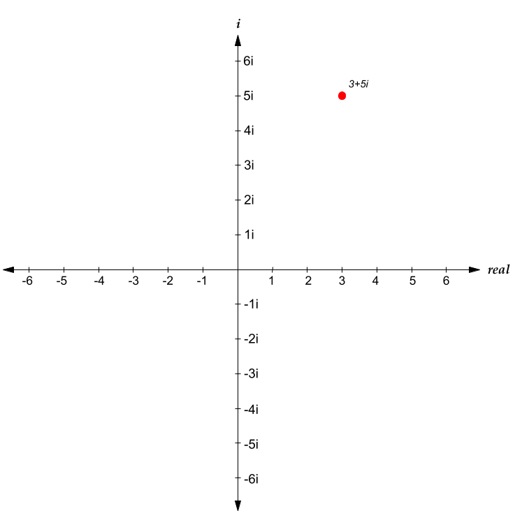

Gabriel Thompson's Personal Blog
Recent posts Archive
6,498 Emails from 215 Colleges
If you've lived in the world for a moderate amount of time, there's a good chance that you've seen this:

Image credit: https://jixta.wordpress.com/2015/04/03/mandelbrot-fractal-in-java/
This image is known as the Mandelbrot set, and it's quite possibly the most culturally influential piece of mathematics. But what is it? What is it made of? How is it generated? Why is it so significant?
In order to answer all of the above questions, we first need to talk about imaginary and complex numbers.
For some numbers, taking their square root is trivial. For example, \(\sqrt{4} = 2\), \(\sqrt{9} = 3\), \(\sqrt{25} = 5\), et cetera. For other numbers, their square roots are irrational. For example, \(\sqrt{3}\) can not be written as an integer, or even as a decimal, but rather can only be approximated as roughly 1.732.
There are, however, some numbers that can't be expressed as a "real" number at all. Consider \(\sqrt{-1}\). What would this be equal to? You might instinctively say that it's \(-1\), but this isn't true, because \((-1)^2=1\), not \(-1\); the negatives cancel out. The truth is that there isn't a "real" solution to \(\sqrt{-1}\). If we want to find the value of \(\sqrt{-1}\), or the square root of any other negative number, we essentially need to invent new numbers.
To represent the square root of negative numbers, mathematicians decided that instead of using decimal numbers, they would use the symbol \(i\) to represent \(\sqrt{-1}\). By using \(i\), we can also represent the square root of any negative number. For example, we can represent \(\sqrt{-9}\) as \(3i\), because \(\sqrt{-9} = \sqrt{9} * \sqrt{-1} = 3 * \sqrt{-1} = 3i\). Multiples of \(i\) are known as imaginary numbers, because they don't express a measurable quantity, rather, an "imaginary" construct. Other numbers, that don't require \(i\) to be represented, are known as real numbers.
However, there's more numbers to explore than just imaginary and real numbers. For example, what if we take the sum of an imaginary number and a real number? A number such as \(3 + 5i\) is neither a real nor imaginary number, rather, it's a combination of both real and imaginary numbers, that can't be expressed alone as either. Numbers that can be represented as a sum of a real number and an imaginary number are known as complex numbers. \(3 + 5i\), and \(-7 + 2.5i\), and \(10^9 + \ln(2)i\) are all complex numbers, because they have a real and imaginary component. In addition, a number like \(6\) is also a complex number, because it is the same thing as \(6 + 0i\). In fact, every single number that there is, is a complex number. Complex numbers are the most broad set of numbers that is possible, because they include every number.
But why should we care about complex numbers? What's the purpose of them? Well, one thing that makes complex numbers amazing is what happens when you perform mathematical operations on them.
Adding and subtracting complex numbers is pretty simple, you just add or subtract the real and imaginary components of each number. For example, \((3 + 5i) + (2 + 4i) = 5 + 9i\). In this example, all that's happening is that the real and imaginary components of the first number are being added to the second (\(3 + 2 = 5\) and \(5i + 4i = 9i\)). The same applies for subtracting -- \((3 + 5i) - (2 + 4i) = 1 + i\), because \(3 - 2 = 1\) and \(5i - 4i = 1i\) (or just \(i\)).
However, complex numbers get most interesting when you try to multiply them. Complex numbers are multiplied the same way that binomials are -- by taking the sum of every pair of two terms. For example, imagine multiplying the complex numbers \(2 + 7i\) and \(-3 + 6i\). You could do the following to simplify:
$$(2+7i)(-3+6i)$$$$(2 * -3) + (2 * 6i) + (7i * -3) + (7i * 6i)$$$$-6 + 12i - 21i + 42i^2$$$$-6 - 9i + 42i^2$$
It would appear that \((2+7i)(-3+6i)\) would evaluate to \(-6-9i+42i^2\). But WAIT! If \(i = \sqrt{-1}\), doesn't \(i^2 = -1\)??. This means that we can actually do the following: $$-6-9i+42i^2$$$$-6-9i+42(-1)$$$$-6-9i-42$$$$-48-9i$$
And here, we see that \((2+7i)(-3+6i) = -48-9i\). The nuance of this -- and what makes complex number multiplication so interesting -- is that instead of just adding each component, you essentially end of subtracting the last pair of components, because of the weird properties of \(i\).
The last thing that we need to understand before we can understand the Mandelbrot set is something called the complex plane. We typically represent real numbers on a 1-dimensional number line, something like this:

The number line is an amazing visual representation of real numbers -- you can easily see if one number is larger than another, or how large the difference between two numbers is. However, it's domain is limited only to real numbers. If you wanted to represent all complex numbers, you would need to use two dimensions, one to represent the real component of a complex number, and one to represent the imaginary component of this complex number. This system of representing numbers is known as the complex plane:

(Apologies for my Google Drawings-quality diagrams)
As you can see above, the complex plane has two axis -- a real axis, and an imaginary axis. The real axis is horizontal, and the imaginary axis is vertical. Any complex number can be represented as a point on the complex plane. For example, in the following diagram, \(3+5i\) is represented as a point on the complex plane:
Any complex number is represented in virtually the same way that one would represent Cartesian coordinates on an xy-plane, by plotting any complex number at the intersection of the vertical perpendicular to the real component and the horizontal perpendicular to the imaginary component.
Now that we understand how complex numbers and the complex plane work, we're finally ready to understand the Mandelbrot set! The mandelbrot set is generated by the following process: For each complex number \(c\), we create a series \(z\), where \(z_0=c\). Then, we calculate each next term of \(z\) through the following formula $$z_{n+1}=z_n^2+c$$ If, as \(n \to \infty\), \(z_n\) continues expanding forever, we consider that point to not be in the Mandelbrot set. If \(z_n\) doesn't expand forever, we say that it is part of the mandelbrot set.
That likely made very little sense, so let's look at it in action. We'll let the number \(c = 0.5 + 0.5i\). Then, we'll create a series \(z\), which will be initially equal to \([(0.5+0.5i)]\), or in other words, will have one item, which is equal to \(c\). Then, we'll calculate square of the last number in \(z\), plus the original number \(c\), and this result will be the next item in \(z\). So, the next item in \(z\) will be: $$(0.5+0.5i)^2+(0.5+0.5i)$$ Using complex number multiplication and addition, this simplifies as follows: $$(0.25+0.5i+0.25i^2)+(0.5+0.5i)$$$$(0+0.5i)+(0.5+0.5i)$$$$0.5+i$$ So, the next item of \(z\) is \(0.5+i\). \(z\) is now equal to \([(0.5+0.5i), (0.5+i)]\). To calculate the next item, we run the same process -- calculating the square of the last item of \(z\), plus \(c\) (or plus the first item). So, we would do the following: $$(0.5+i)^2+(0.5+0.5i)$$$$(0.25+i+i^2)+(0.5+0.5i)$$$$(-0.75+i)+(0.5+0.5i)$$$$-0.25+1.5i$$ Here, we have calculated that the next item of \(z\) is \(-0.25+1.5i\), so \(z\) is now equal to \([(0.5+0.5i), (0.5+i), (-0.25+1.5i)]\). If we repeat this process again and again, the next items will be (approximately): $$-1.6875-0.25i$$$$3.285+1.344i$$$$9.487+9.329i$$$$3.468+177.498i$$ It appears that as we repeat this process -- squaring the last number, then adding that to the \(c\) -- the value is growing larger and larger. Indeed, if we continue calculating the next values of \(z\), they will approach infinity. However, this is not true for some other numbers. For example, take \(c=0.1+0.4i\). If we keep on taking the square of the last value and adding it to \(c\), we get the following next terms: $$-0.05+0.48i$$$$-0.128+0.352i$$$$-0.008+0.31i$$$$0.004+0.4i$$$$0.104+0.8i$$$$-0.522+0.565i$$$$0.053-0.19i$$ Interesting! As we keep iterating the recursive formula \(z_{n+1}=z_n^2+c\) where \(c=0.1+0.4i\), the result doesn't appear to be expanding to infinity.
So here's the question: for which values of \(c\) does \(z\) expand forever, and for which values of \(c\) does \(z\) stay bounded? Well if, on the complex plane, we color the values of \(c\) where \(z\) does stay bounded in black, and color the values of \(c\) where \(z\) expands to infinity in white, we get the following:

The image above is essentially a map of which numbers satisfy the property that, when repeatedly squared and added to their original value, do not expand to an infinity. It's certainly not what anyone would've expected.
Here's a higher-definition version, that is colored in accordance with how fast each value of \(c\) expands to an infinity:
All that's being done to generate this image is squaring and adding complex numbers. Maybe you'd expect some form of parabola, or ellipse to be generated. But instead, you get neither. You get a shape that's a sort of cardioid, but bordering other circles on the outside. Off of the circles on the side, there are infinitely spiraling branches. The edge is rough, it never seems to settle. The circle to the left of the main cardioid seems to be connected by an infinitesimally small bridge.
The mandelbrot set, however, goes much deeper than what is shown. Zooming into specific parts of the mandelbrot set can yield results like this:

It's amazing to think that the mandelbrot set is something generated by such a relatively simple equation. The infinite complexity doesn't look like something that a deterministic system could generate. It looks more like a work of art by a mentally-ill ballroom ceiling painter from the Victorian period. I think part of what makes the mandelbrot set so "weird" is that it's unpredictable, but it's not chaotic. It's shape and character vary drastically in different regions, but it's also oddly natural in its shape. There's nothing predictable about the mandelbrot set, but it's all familiar. In fact, you can even find smaller versions of the mandelbrot set that are exactly the same as the original. That's right, the mandelbrot set is even a fractal too! A few of these smaller versions are actually visible in the branches of the above image.
When people say that the mandelbrot set is an example of how math can be visually beautiful, I absolutely agree. The mandelbrot set is an amazing shape to explore for hours. In fact, there are plenty of YouTube videos that are just extended zooms into the mandelbrot set, to an absurdly high precision. But I think that describing the mandelbrot set as aesthetically pleasing overshadows the real beauty of it, which is intellectual. It's intellectual beautiful how perfectly deterministic rules can yield such organic and frankly, bizarre, results.
The mandelbrot set is not the only fractal generated by a recursive function applied to complex numbers, there's plenty of others. For example, the "Julia Set" is a set of fractals that bear many similarities to the mandelbrot set, including the equation used to generate it; but that's a story for another time.
I think it's really sad that the mandelbrot set doesn't get taught more in schools. To a certain extent, the mandelbrot set's existence is an utterly useless piece of information to most people. You most likely will not need to use the mandelbrot set on your next tax returns (it would be very cool if you did though). But this kind of math is also incredibly intellectually enriching. It seriously calls into question everything we know about mathematics, and to a certain extent, the way the universe works. Observing the Mandelbrot set feels a bit like tapping into a part of the universe we weren't supposed to explore. I cannot deny, it is a bit spooky.